Inferencia, aprendizaje automático y causalidad sobre la cohorte NHEFS (1971–1992, N = 1.629 fumadores)
Probabilidad de morir en 1983–92 a partir de una entrevista inicial. El presupuesto es limitado y conviene empezar por los de mayor riesgo.
Objetivo: death · prevalencia 19,5%
El miedo a engordar frena la cesación. Para dimensionar el apoyo nutricional hace falta el efecto de la intervención, no la diferencia observada.
E[Y | do(T=1)] − E[Y | do(T=0)] · Y = cambio de peso 1971→82
Restricciones: datos observacionales, 3,9% sin peso en 1982 (censura que no es MCAR, p = 0,0002), cambio de cuestionario a mitad del estudio (791 respuestas faltantes por diseño) y sin datos de dieta.
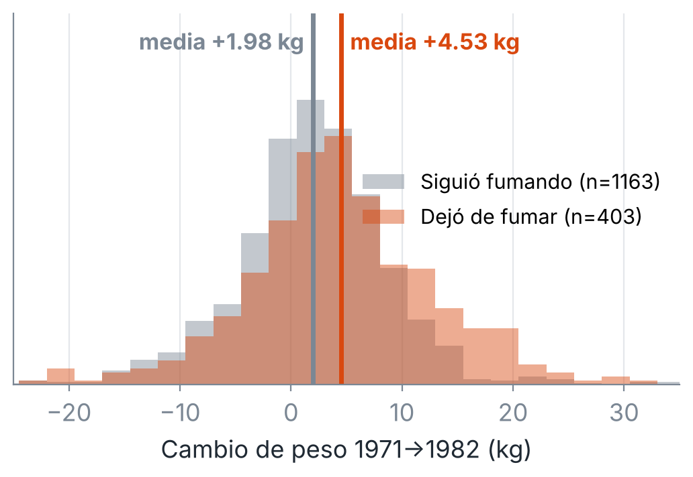
Hipótesis H-a (autoselección) confirmada: la diferencia cruda mezcla efecto y composición.
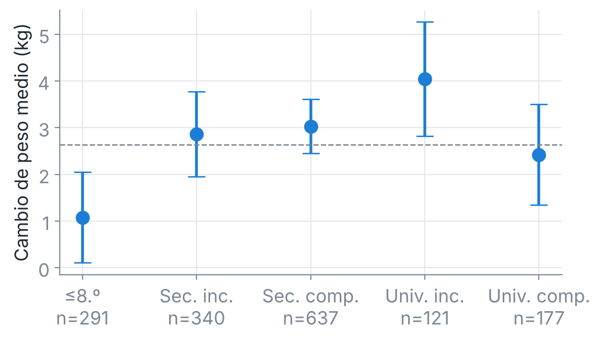
Levene p = 0,014 → ANOVA de Welch F = 4,21, p = 0,002 (η² = 0,011). Bonferroni-Welch: solo ≤8.º difiere de Sec. completo y Univ. incompleto.
| Supuesto | Diagnóstico |
|---|---|
| Homocedasticidad | BP = 81,5 → HC3 |
| Normalidad | JB = 1.104 → Huber RLM |
| Independencia | DW = 2,01 ✓ |
| Influencia | Cook máx. 0,03 ✓ |
| Colinealidad | VIF 7,7 → < 2,4 |
qsmk: +3,21 kg (EE HC3 0,49); con Huber, +2,81 kg.
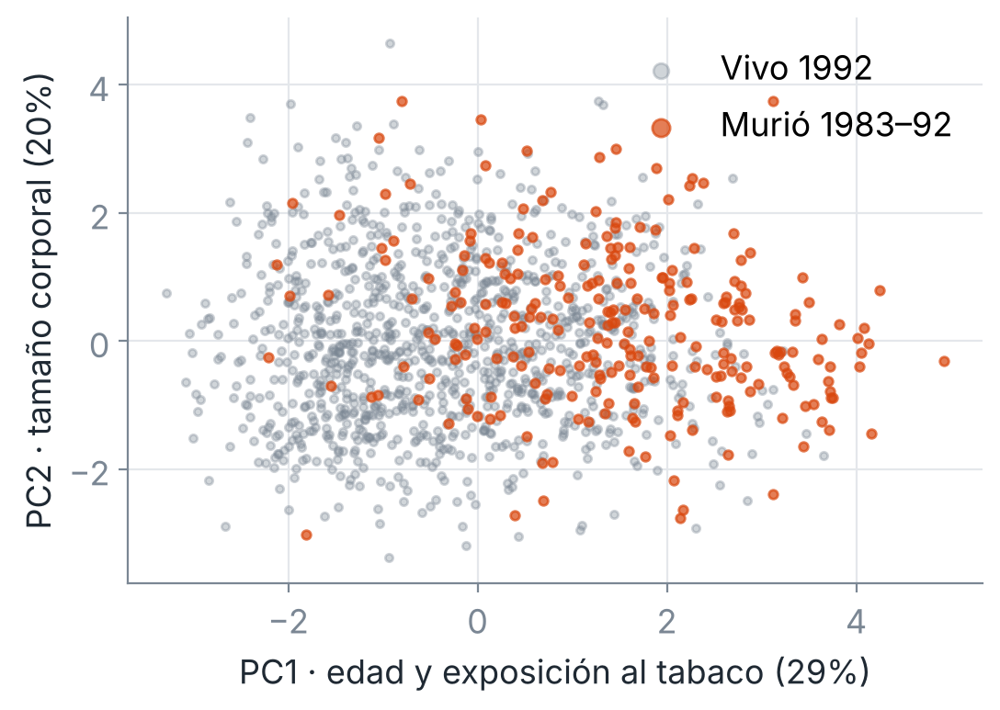
Kaiser retiene 3 componentes (63,7%). PC1 = envejecimiento y exposición acumulada; ahí se concentran las muertes.
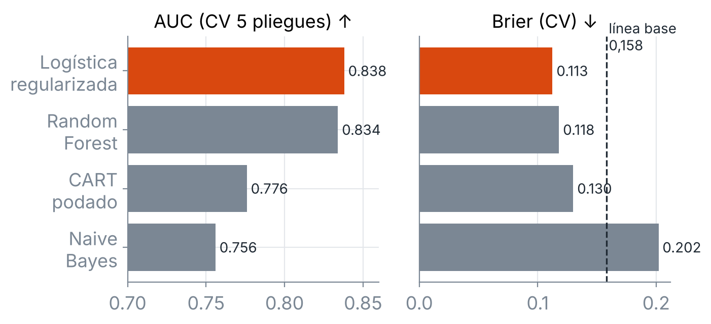
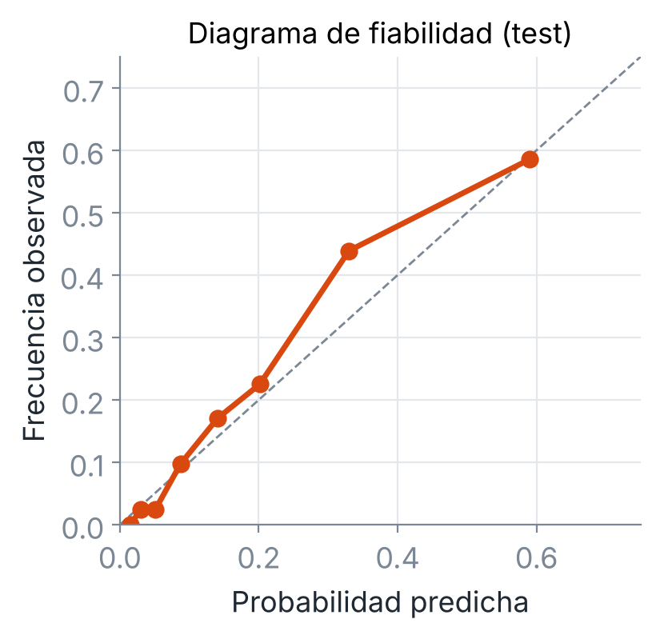
| Test (n = 326, 64 muertes) | Valor |
|---|---|
| AUC-ROC | 0,847 |
| PR-AUC (línea base 0,196) | 0,547 |
| Brier (línea base 0,158) | 0,117 |
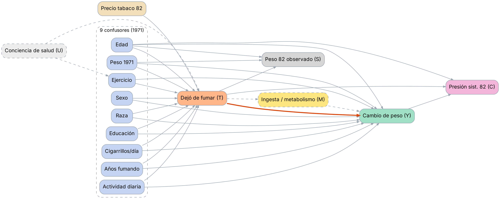
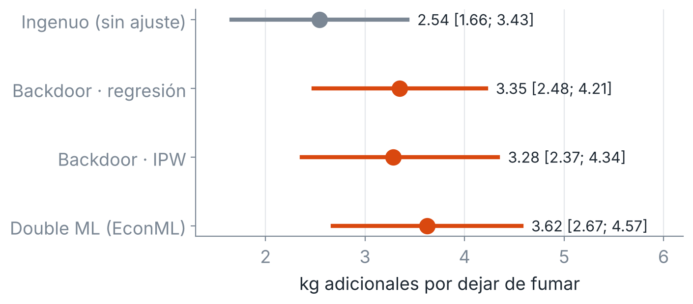
| Refutación DoWhy | Nuevo efecto | p |
|---|---|---|
| Causa común aleatoria | 3,350 | 0,90 |
| Tratamiento placebo | −0,032 | 0,88 |
| Subconjunto 80% | 3,334 | 0,98 |
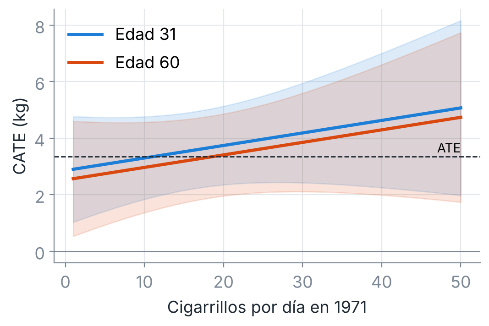
CATE (LinearDML) = 3,21 + 0,044·cig − 0,011·edad. Los IC de ambos coeficientes incluyen al 0: no hay evidencia para diferenciar por perfil.
Robustez: IPCW 3,35 · OLS flexible 3,46 · IPW-DoWhy 3,05. Todas las estimaciones válidas caen entre 3,05 y 3,62 kg.
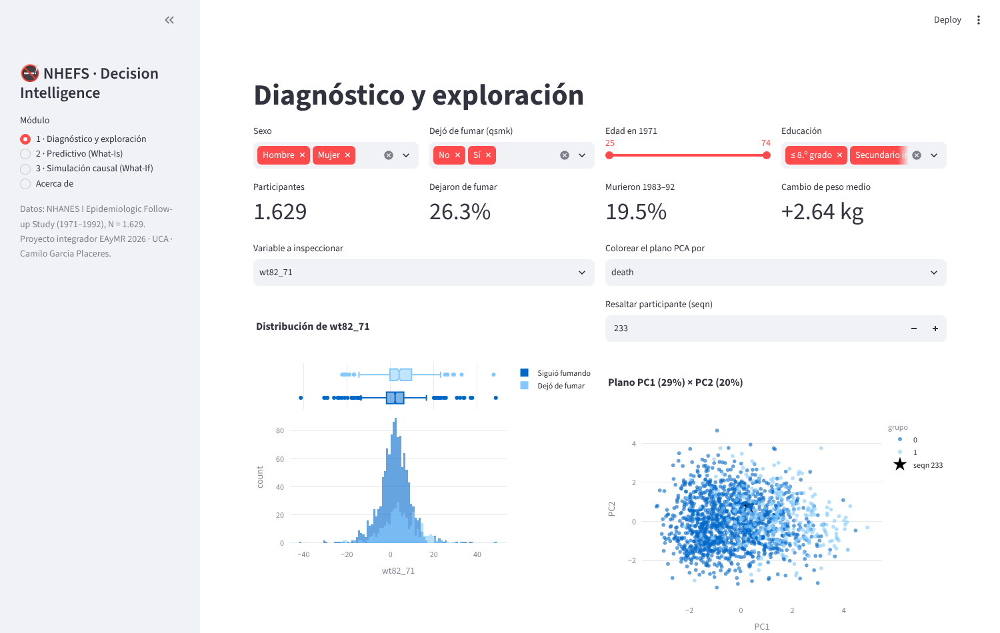
1 · Diagnóstico. Filtros, distribuciones y proyección de un caso sobre PC1 × PC2.
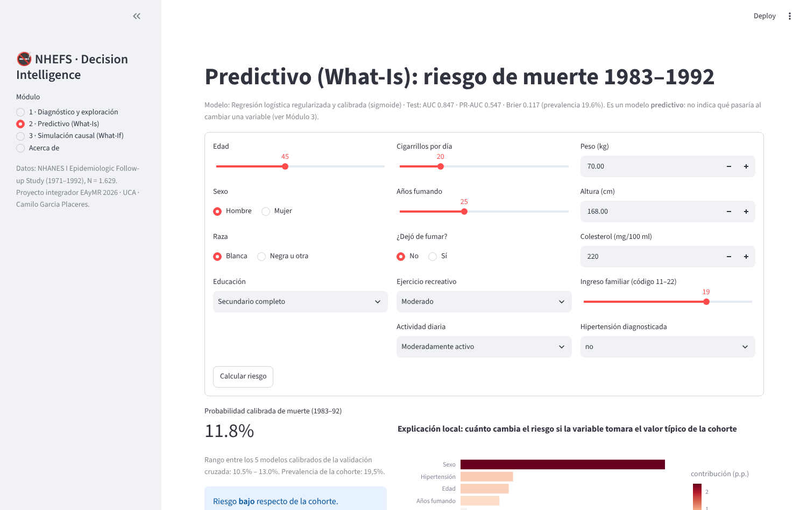
2 · What-Is. Probabilidad calibrada, rango entre los 5 modelos de la CV y explicación local.
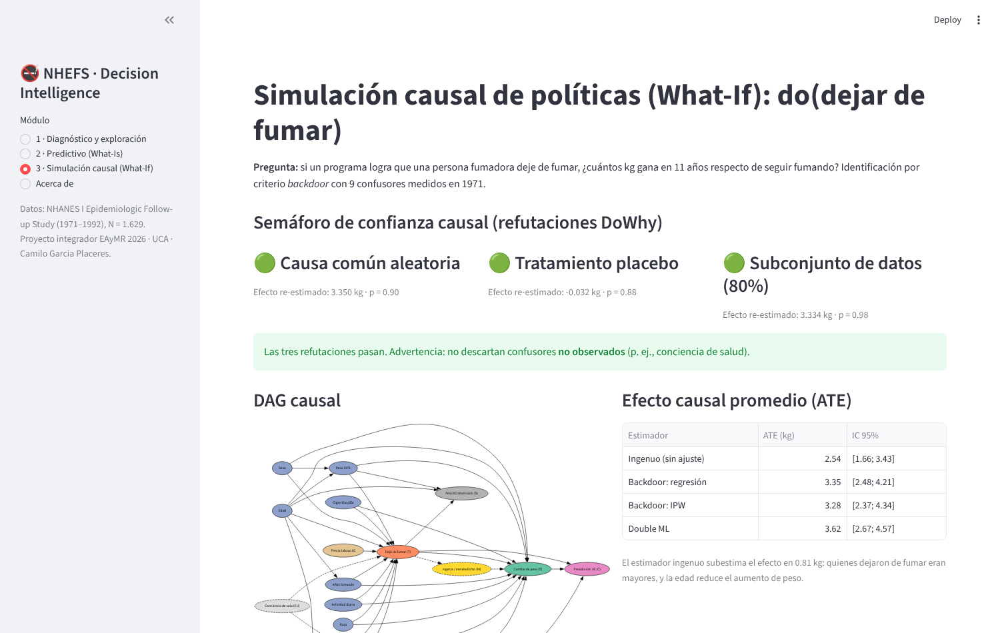
3 · What-If. DAG, ATE, CATE por perfil, semáforo de refutaciones y simulador de kg para el programa.
La app solo lee artefactos de /models, generados por el mismo pipeline que el notebook. Una prueba verifica que reproducen el AUC exacto. 36 pruebas en CI (ruff + pytest).
Es el efecto sick quitter: dejan de fumar quienes son mayores o ya recibieron un diagnóstico. El modelo predictivo usa esa asociación legítimamente para predecir, pero leerla como palanca llevaría a la recomendación opuesta a la correcta.
Regla del proyecto: el Módulo 2 se usa para priorizar, el Módulo 3 para intervenir. Nunca al revés.
Repositorio: github.com/USUARIO/REPO · Notebook, app, tests y bitácora reproducibles con SEED = 42.